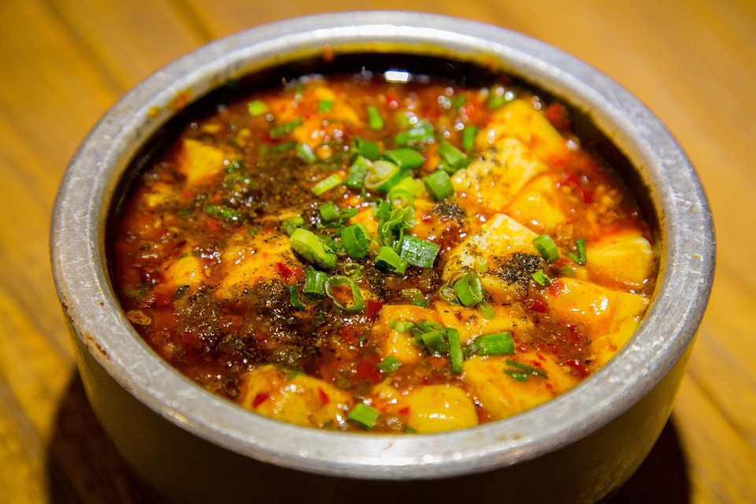

<
川式麻婆豆腐

9.0
综合评分
1241
人做过这道菜
方法
在锅中加入适量的油，将豆腐切块后放入锅中炒至两面微黄，然后取出备用。
在锅中加入一些油，放入花椒炒香后捞出丢弃，然后在锅中加入豆瓣酱、豆豉、生姜和蒜炒香。
加入切好的牛肉末，炒至变色。
加入料酒、酱油、糖、五香粉，炒匀后加入适量的水或高汤。
把炒好的豆腐块放入锅中，小火慢炖10分钟让豆腐充分吸收汤汁。
加入用水和生粉调成的水淀粉，搅拌均匀后炖煮2-3分钟使汤汁粘稠。
最后撒上葱花、花椒粉和辣椒粉，淋上热油，即可出锅。
享受！
原料
300
克嫩豆腐
50
克牛肉末
，切碎或压碎
1
汤匙豆瓣酱
1
片生姜，切末
2
瓣大蒜，切末
1
汤匙料酒
1
汤匙酱油
1
茶匙辣椒粉
小知识
麻婆豆腐是四川菜的一道经典菜品，其特点是麻、辣、鲜、烫，色泽红亮，口感醇厚。"麻婆"这个名字来源于菜品的创始人，据说是一位有麻点的老婆婆，因此得名。
该菜谱发布于 2024-05-06 09:32:14
版权归作者所有，没有作者本人的书面许可任何人不得转载或使用整体或任何部分的内容。